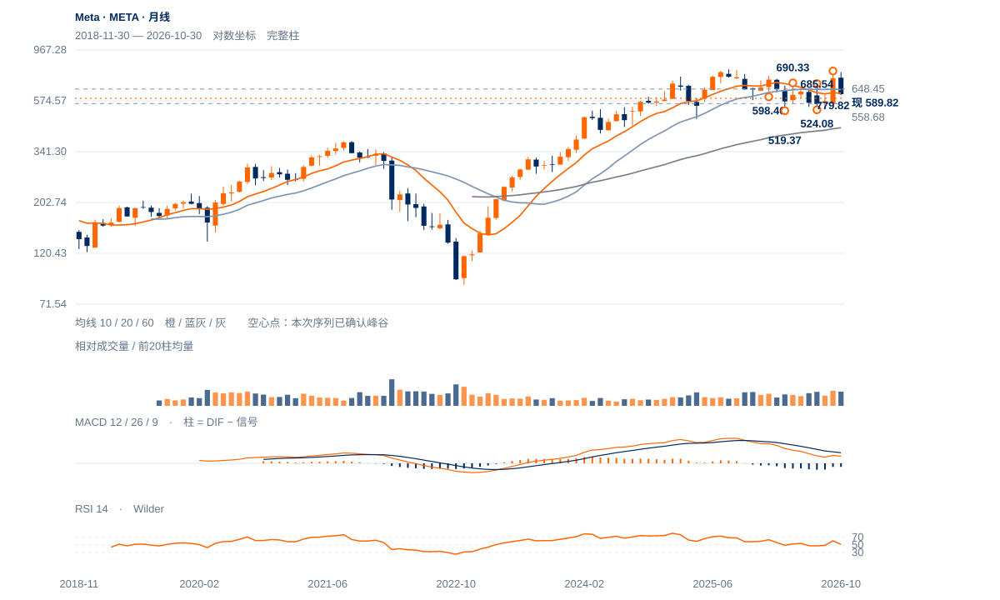

完整周收盘跌破，扩大调整尺度
Meta · 2026-11-24完整收盘
缩量回试守位，修复仍不完整
589.82-1.30%
缩量回试旧谷与分层恢复
关键价位与改判条件
日收盘再失，损害新恢复
日收盘收回并保持，增加修复层次
近端恢复后，再观察同级前高
分期限展望
近期部分修复仍在，但尚未恢复较大受损线。583.80守位支持缩量回试；606.41日收盘恢复并保持后，才提高修复层次。
未来2—6周保留部分修复后的缩量回试，583.80全日保持提供承接证据，606.41却仍未恢复。若守谷后需求重新推进，可减轻再下探风险；633、648仍为更大级别供应。
未来1—3个月仍在下沿520、上沿796的宽区间中下部，646完整20月均衡在上方。520、524大区间尚未破，606.41恢复及较高周谷可降低回试下沿风险，周收破520则需扩大调整尺度。

长期背景
下沿520、上沿796的长期宽区间内，779、796上沿再试失败后回到中下部，646完整20月均衡仍在上。583.80回收后的缩量回试只改善近端，606.41及633、648恢复决定更大修复。 当前日收盘589.82与完整10月月线分开观察；11月尚未结束。
中期结构与新证据
完整周线已更新至11月20日：2026-08-19低536.85（2026-09-04确认）；2026-09-24高779.82（2026-10-09确认）；2026-10-13高771.27（2026-10-30确认）。最新一周与上次11月20日背景分别保存；25日国内与24日美股仅为本周进行中观察。24日低584.26仍高于583.80，收589.82跌1.30%；较23日回收之后出现缩量回试，相对量0.58倍。高600.32低于23日602.46及606.41原受损线，近端守位与更大供应未恢复并存。
主要反方
缩量守谷可支持卖压减轻，但上推无进展也可能是需求不足；606.41回收更有分辨力。
波动与量能
RSI14 40.24；ATR14 23.97；相对量0.58倍